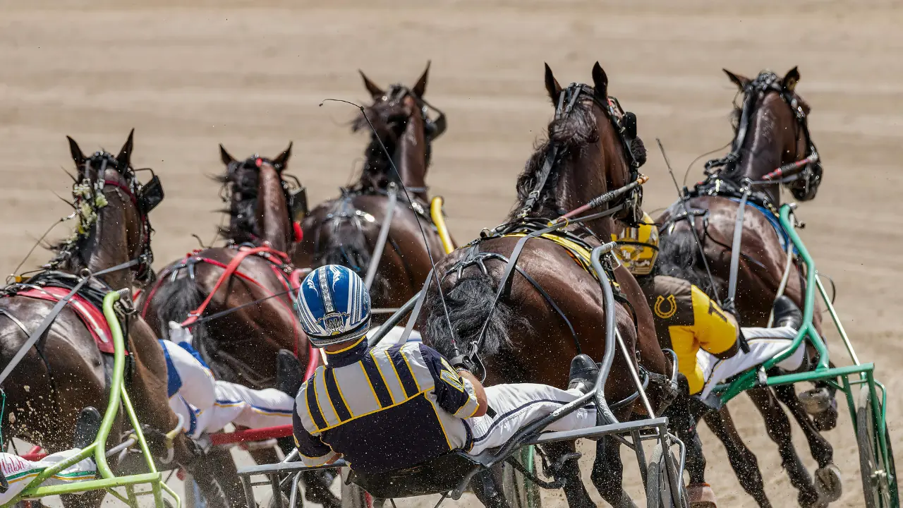

Hippodrome
Laval
Discipline
Trot Attelé
Distance
2850m
Partants
15
Dotation
100000€
Vidéo : Regarder l'analyse sur YouTube →
| N° | Cheval | Driver | Cote |
|---|---|---|---|
| 1 | LIGHT MY FIRE | — | 35 |
| 2 | KAMEHAMEHA | — | 30 |
| 3 | RIKITA JP | Abrivard M. | 25 |
| 4 | HURRICANE CARTER | Lebourgeois Y. | 13 |
| 5 | JILORD VIVA | Raffin É. | 27 |
| 6 | INVICTUS MADIBA | — | 18 |
| 7 | L'AS DESBOIS | Collette A. | 25 |
| 8 | HORATIUS D'ELA | — | 22 |
| 9 | IBISCUS MAN | Mottier M. | 16 |
| 10 | GENDREEN | — | 40 |
| 11 | HANNIBAL TUILERIE | — | 20 |
| 12 | JABALPUR | Chavatte A. | 8 |
| 13 | HARLEY GEMA | Rochard B. | 30 |
| 14 | IDÉAL LIGNERIES | Barrier A. | 24 |
| 15 | INMAROSA | Abrivard L. | 15 |
Sélection de 8 chevaux :
412314751315
Notre favori : 4 — HURRICANE CARTER
2ème : 12 — JABALPUR
3ème : 3 — RIKITA JP
4ème : 14 — IDÉAL LIGNERIES
5ème : 7 — L'AS DESBOIS
4 — 12 — 3
12 combinaisons
4 — 12 — 3 — 14 — 7
60 combinaisons
4 — 12 — 3 — 14 — 7 — 5 — 13 — 15
336 combinaisons